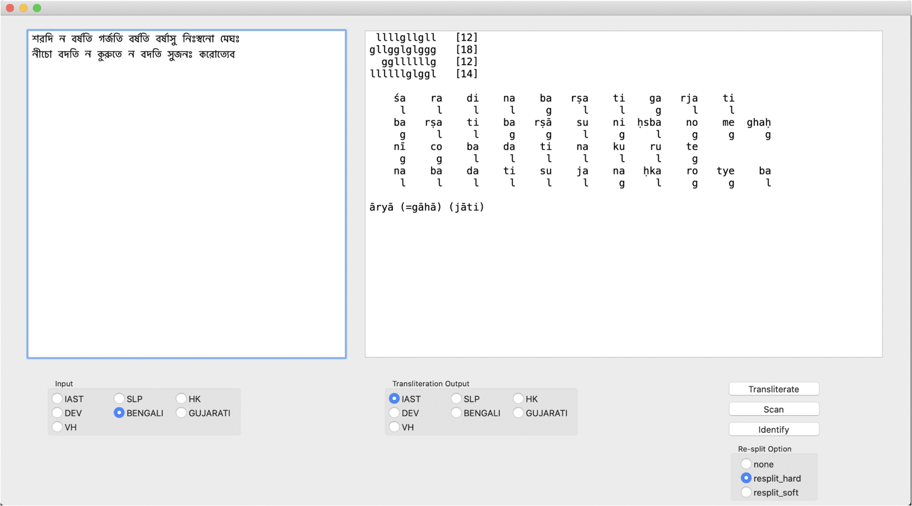
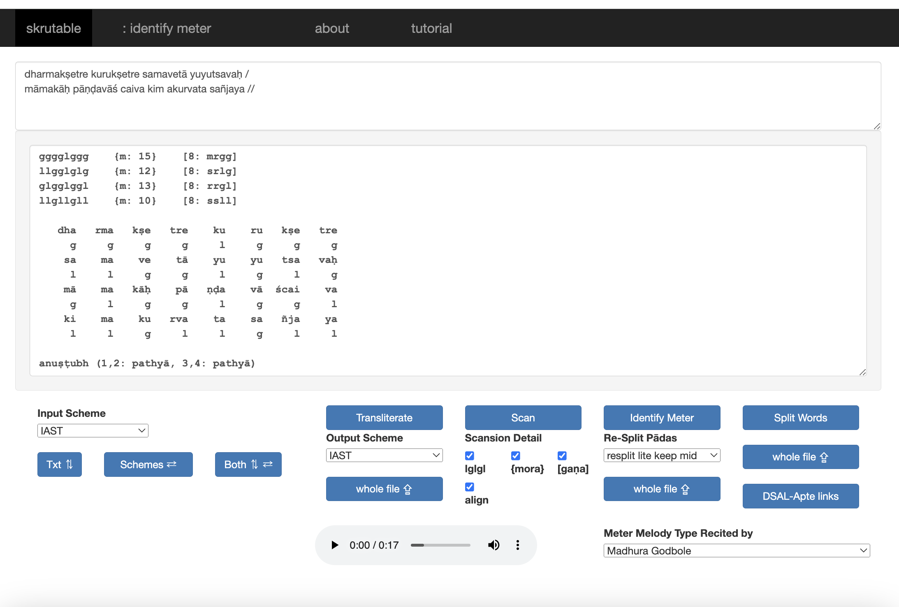

Skrutable was my first real digital Sanskrit project, my first real Python project, and, back when I began it, the first programming of any sort I had done in over ten years. At that time, in 2015, I was still in the early phase of understanding the basics of Unicode (used for both Indic scripts and IAST), so transliteration-plus-meter calculation was a very welcome starter project for me. I was really excited to be learning Python, which has a rich ecosystem of open-source tools, but I saw that Sanskrit was not yet well represented in that space, so I set about trying to make a useful contribution.
The project developed organically over the next few years. At first it was just a series of scripts that could be called from the command line, with support for the few transliteration schemes and meters I cared most about. As I got more enthusiastic, I added more schemes and more meters, and I also created a primitive wxPython user interface that required potential users to download the code and set it up to run locally, which I'm sure no one did.

Then, during winter 2021, while still in pandemic-bunker mode and looking for a break from dissertation writing, I took a week or two to put the project online in a way that would be actually useful to more people, using the PythonAnywhere hosting platform, which was surprisingly easy and fun and worth the couple of dollars it cost me. That web app, using simple Flask and Bootstrap, is still the main face of the project today. Over the next few years, I added a few more functional features (whole-file processing, meter melodies, sandhi and word splitting) and also a few accessibility features (pip-installability, HTTP endpoints).
Skrutable now stands as a three-part workbench, with both Python-package and web-based interfaces. The easiest way to use it for day-to-day purposes is to visit the web app at skrutable.info.


This web interface gives access to all three major functions:
- Transliteration
- Scansion and meter identification
- Sandhi and word splitting
Just enter input in the top box and click the appropriate blue button underneath to get output in the larger bottom box. I'll leave discussion of specific details for later posts. In the meantime, more info is available on the website's About page, including video presentations.
There are also two kinds of APIs for programmers to use:
- Object-oriented, pip-installable Python package skrutable on PyPi
- HTTP endpoints at skrutable.info/api
With these, I hope to give coders flexible options for using Skrutable programmatically.
Now, to be clear, there are quite a few other projects that overlap with Skrutable. In the interest of transparency and clarity, I've compiled here below (see also this table on the Skrutable GitHub page) an updated selection of similar tools that do transliteration, meter, or word-splitting. My focus here is on 1) web apps, which are most useful for the majority of users overall, and 2) Python interfaces (either a PyPi package or a usable code repo), which are most useful for the majority of programmers. Other functionality like morphological analysis is not considered here.
| Author | Web app | Python |
|---|---|---|
| Transliteration | ||
| Arun Prasad | Sanscript | indic_transliteration |
| Vinodh Rajan | Aksharamukha | aksharamukha |
| Meter Identification | ||
| Keshav Melnad | Meter Identifying Tool | n/a |
| Shreevatsa Rajagopalan | Metre Identifier | (sanskrit) |
| Hrishikesh Terdalkar | Chandojñānam | (chanda) |
| Word Splitting | ||
| Gerard Huet | Sanskrit Reader Companion | n/a |
| Amba Kulkarni | Saṃsādhanī Sandhi-Vicchedikā | n/a |
| Sriram Krishnan | n/a | (sandhi_vicchedika) |
| Sebastian Nehrdich | n/a | (Sanskrit Sandhi and Compound Splitter) |
| " | BuddhaNexus Stemmer + Tagger | n/a |
Now, each of these projects has its strengths, and comparing them is not straightforward. Some projects aim to be more permissive of "average," real-world input and to give corresponding output, while others are more strict in demanding "properly" formatted input; how to render anusvāra and anunāsika, for example, is a surprisingly complex question. Again, some projects lean more heavily toward certain kinds of human use, while others lean more toward machine-operability. (For their part, programmers will notice more subtle differences like code quality and processing efficiency.) On the one hand, this diversity is natural, because different users place importance on different things. As a result, though, there are not yet any accepted benchmarks for assessing relative performance across these projects.
I would like to return to this question of comparison in the near future, because I believe some extra clarity would help. For now, though, I think we should simply accept some redundancy and competition in the space as a good thing. For one, academic software projects can easily lack proper financial support. Second, they tend to be idiosyncratic and maintainable only by their originators. In short, if such a project dies for whatever reason, the community will need other options. Plus, functional diversity among options, assuming a certain level of quality and robustness, is a good thing in its own right. I wouldn't say we need a lot more of these projects. But from personal experience, I know that they are fun to do, so I bet there will be more to come.
For my part, I plan to keep Skrutable up and running. Its web interface is no masterpiece, I know. And after now two years of working as a professional software engineer, I am only too aware of how creaky and cringy the code it is. There's lots to do, and I have more ideas than time. But I'm hoping to get back to work again soon.